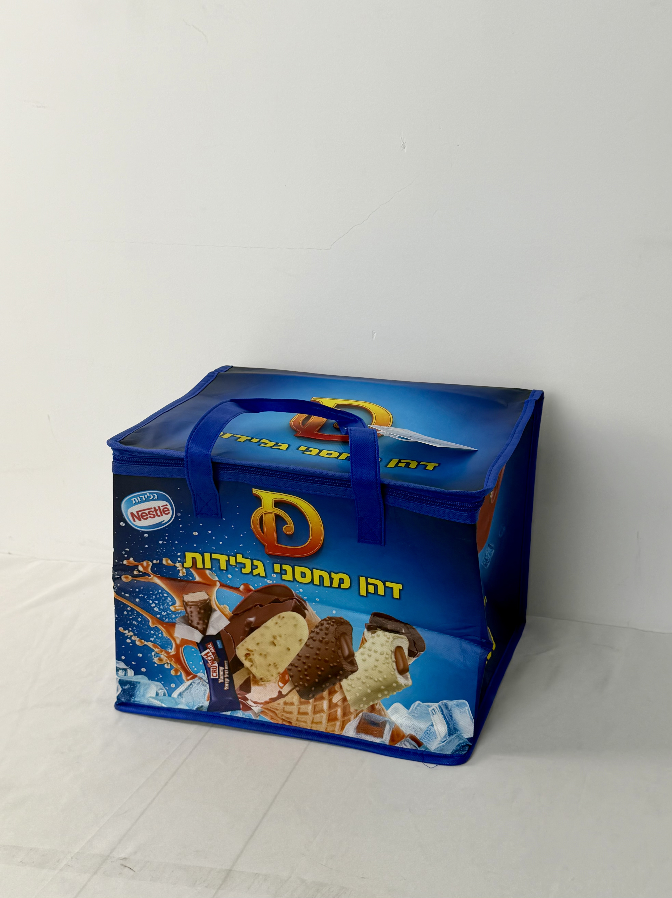

A large-capacity zip-top cooler bag for Nestle Israel's ice cream promotion, featuring mouth-watering product photography and multilingual branding that transforms frozen treats into impulse purchases.

Nestle is the world's largest food and beverage company, with its ice cream division operating in over 100 countries through iconic brands like Häagen-Dazs, Drumstick, and local market favorites. In Israel, Nestle's ice cream portfolio competes in a hot-climate market where frozen treats are a year-round staple rather than seasonal luxury. The company's promotional strategy emphasizes bulk purchasing and family consumption — positioning ice cream as a social sharing occasion rather than individual indulgence.
In Israel, ice cream isn't just dessert — it's part of the culture. Our cooler bag needs to handle the heat while making customers hungry just looking at it.
The insulated cooler bag was developed as a gift-with-purchase for Nestle Israel's summer promotion, distributed with multi-pack ice cream purchases at major supermarket chains. Unlike standard promotional bags, this cooler was designed for repeated reuse — extending brand exposure throughout the hot season.
The design strategy is appetite appeal through photography. Large-format product shots of chocolate-dipped ice cream bars, waffle cones, and vanilla cores dominate the composition — creating immediate craving response. The deep blue field evokes coolness and ice, while the Nestle logo and Hebrew typography anchor the design in local market familiarity.
Large-format ice cream product shots trigger immediate craving and purchase impulse.
Dark blue field psychologically associated with cold temperatures and refreshing relief from heat.
Coil zipper ensures thermal seal integrity during transport in extreme summer heat.
Nestle logo and Hebrew text serve local Israeli market while maintaining global brand consistency.
Israel's summer temperatures regularly exceed 35°C, creating extreme challenges for ice-cream transport. The cooler bag specification prioritizes deep-cold retention, structural stability for multi-item loads, and zip-seal security that prevents thermal leakage.
| Parameter | Specification | Test Standard |
|---|---|---|
| Frozen Retention | < -10°C for 60 min (40°C ambient) | Internal Protocol |
| Load Capacity | 8 kg | ASTM D5265 |
| Zipper Durability | > 1,000 cycles | ASTM D2061 |
| Seam Strength | > 30 N/cm | ASTM D1683 |
Deep-cooler bags for ice cream require specialized manufacturing that standard thermal bags don't. The six-stage workflow incorporated enhanced insulation bonding, zip integration, and extreme-heat validation testing.
120gsm non-woven PP with deep blue masterbatch. Color matched for coolness association and product-photography contrast.
CMYK process for ice cream product photography. 175 LPI for appetizing detail reproduction.
20-micron gloss BOPP enhancing product-shot color vibrancy and providing moisture protection.
5mm EPE foam bonded to aluminum-PE barrier. Heat-compression at 4.5kg/cm for maximum thermal sandwich integrity.
Nylon coil zipper sewn into reinforced top channel. Seal-tested for thermal integrity under load.
Blue handles attached with reinforced stitching. Random-sample thermal testing at 40°C ambient. AQL 1.0 inspection.
The cooler bag was distributed as a gift-with-purchase during Nestle Israel's peak summer promotion at Shufersal, Rami Levy, and other major supermarket chains. The campaign targeted families purchasing multi-pack ice cream for home freezers and outdoor gatherings.
Key Insight: The product photography proved so effective that customers reported making unplanned ice cream purchases specifically because the bag's imagery triggered cravings at point-of-sale. The bag essentially functioned as a secondary advertisement that converted shoppers who hadn't initially planned to buy ice cream.
The zip-top design was particularly praised by customers who previously used open-top bags that allowed cold air to escape. The secure closure gave families confidence to transport ice cream across long distances in summer heat — expanding Nestle's effective sales radius.
Three design decisions differentiate this ice-cream cooler from standard promotional bags. Each addresses the specific challenge of selling frozen products in extreme heat.
The large-format ice cream shots aren't merely decorative — they're behavioral triggers. Research shows that viewing high-quality food photography activates the same brain regions as actual eating. By printing appetizing product images on the bag, Nestle creates a portable craving generator that converts spectators into purchasers.
Standard 2-3mm bags fail within 15 minutes in 40°C Israeli summers. The 5mm specification maintains frozen integrity for a full hour — the difference between confident family shopping trips and anxious rush-rush dashes from store to car.
Open-top bags allow continuous cold-air escape, undermining insulation regardless of foam thickness. The zipper creates a sealed thermal envelope that maintains temperature stability — a critical feature for multi-stop shopping trips where the cooler sits in a hot car between stores.
We engineer insulated cooler bags for ice cream, frozen food, and temperature-sensitive products. From extreme-heat performance to appetite-driving photography, we deliver packaging that protects and sells.